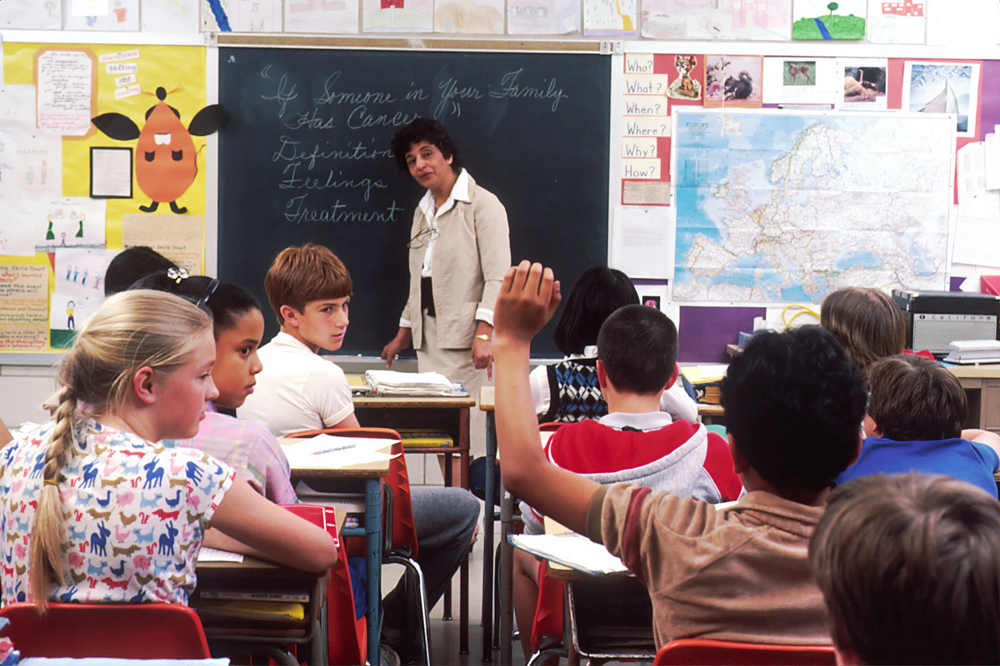
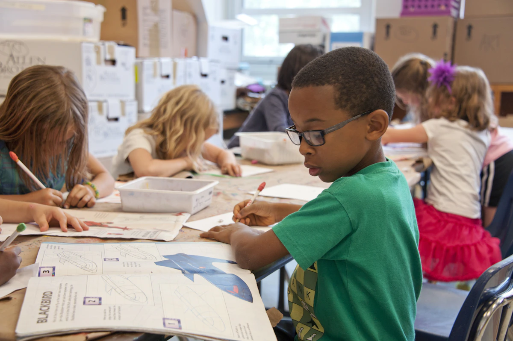
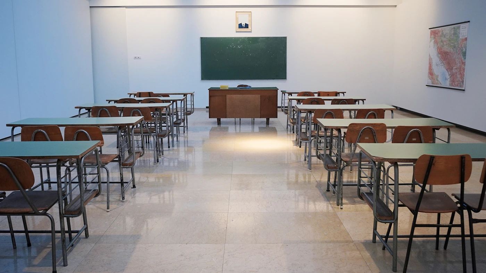

Curiosity
Ask a good question, investigate it and share what you find.

A thoughtful education begins with people who care about the whole child.

We believe children learn best when they feel safe to ask questions, make mistakes and try again.
Bright Future Academy brings early years, primary and junior school together in a connected learning journey. Classroom teaching, practical experiences and everyday care all have a place in that journey.
Our Nairobi Main and Nakuru West campus settings give families a clear choice of community, with the same emphasis on thoughtful learning and strong family relationships.
Children meet these values in the way we listen, share responsibility and recognise effort.
Ask a good question, investigate it and share what you find.
Listen carefully, treat others kindly and care for shared spaces.
Follow through, reflect honestly and learn from the choices you make.
Take the next step, even when it is new, with support close at hand.
Class teachers are the first point of contact for everyday questions. Families can raise learning or wellbeing concerns, discuss classroom support and agree useful next steps.
Regular learning conversations, clear reporting and familiar routines help children settle, build friendships and develop independence.
Talk to the school office
Explore the classrooms, talk through the school day and discover which learning stage feels right for your family.